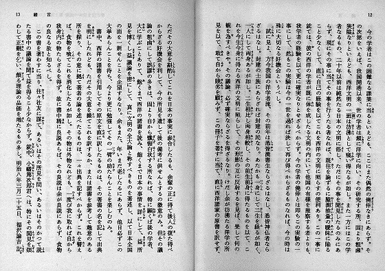
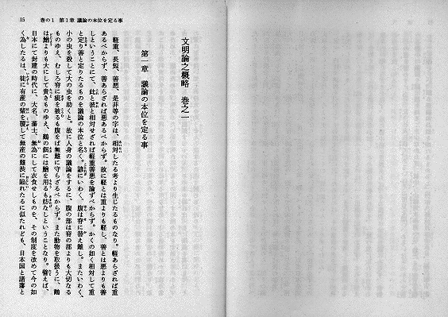
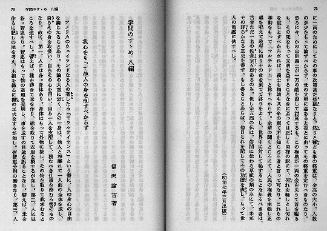
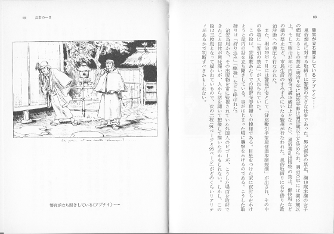
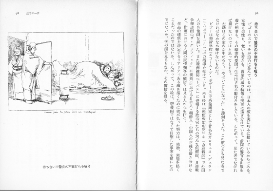

レイアウト １
ページや段をあらためる処理
書籍や雑誌ではしばしば、内容の切れ目でページや段をあらため、次のページや次の段のはじめから、あとを続ける組み版が行われます。
前の内容が、左右どちらのページで終わったかにかかわらず、続きを次の左ページ（縦組みの場合）から始める処理を、「改丁（かいちょう）」と呼びます。
「改丁」はしばしば、大きな内容の切れ目で用いられます。
続きを次のページから始める処理を、「改ページ」と呼びます。（「改頁」とも書きますが、青空文庫の注記では「改ページ」とします。）
「改ページ」はしばしば、中程度の内容の切れ目で用いられます。
続きを右のページから始める処理を、「改見開き」と呼ぶことにします。
「改丁」や「改ページ」に比べればまれですが、「改見開き」は、見開き単位の処理が続く場合などに用いられます。
段組された書籍で用いられる、内容の切れ目で段を改める処理を、「改段」と呼びます。
段組された書籍でも、新しい内容が次のページから始まる場合は「改ページ」、次の左ページから始まる場合は「改丁」と呼びます。
改丁
前にくるブロックの最後に、改行して［＃改丁］と書き込んでください。
※記入例の下に、テキスト版をスクリプトで変換して得た、XHTML 版のタグを示します。


▲左ページで前の内容が終わり、次の右ページは空白、続く左ページから新しい内容が始まっています。（画像をクリックすると、拡大します。）
記入例
…頗《すこぶ》る理論の品価を増《まし》たるもの多し。明治八年三月二十五日、福沢諭吉｜記《しるす》。
［＃改丁］
［＃１字下げ］文明論之概略 巻之一［＃「文明論之概略 巻之一」は大見出し］
［＃３字下げ］第一章 議論の本意を定る事［＃「第一章 議論の本意を定る事」は中見出し］
軽重、長短、善悪、是非等の字は、相対《あいたい》したる考えより生じたるものなり。…
…<ruby><rb>頗</rb><rp>（</rp><rt>すこぶ</rt><rp>）</rp></ruby>る理論の品価を<ruby><rb>増</rb><rp>（</rp><rt>まし</rt><rp>）</rp></ruby>たるもの多し。明治八年三月二十五日、福沢諭吉<ruby><rb>記</rb><rp>（</rp><rt>しるす</rt><rp>）</rp></ruby>。<br />
<span class="notes">［＃改丁］</span><br />
<br />
<div class="jisage_1" style="margin-left: 1em"><h3 class="o-midashi"><a class="midashi_anchor" id="midashi100">文明論之概略 巻之一</a></h3></div>
<br />
<br />
<div class="jisage_3" style="margin-left: 3em"><h4 class="naka-midashi"><a class="midashi_anchor" id="midashi110">第一章 議論の本意を定る事</a></h4></div>
<br />
<br />
軽重、長短、善悪、是非等の字は、<ruby><rb>相対</rb><rp>（</rp><rt>あいたい</rt><rp>）</rp></ruby>したる考えより生じたるものなり。…
●改丁の例。福沢諭吉「文明論之概略」岩波文庫、岩波書店、1997（平成9）年3月5日第4刷、12〜15ページ
※表示ソフト開発者へのお願い：［＃改丁］によるページの改めは、レイアウトして、この注記が見開き（見開き仕様の表示の場合）もしくはページの先頭（単ページ仕様の表示の場合）に配置された場合には、機能させないでください。たとえば、底本で図版がページ全体をしめている場合、ファイルでは図版注記／改丁注記の順に書きます。図版をページ全体で表示する仕様では、改丁注記が次ページの先頭に送られ、不要な空白が生じる可能性があります。
改ページ
前にくるブロックの最後に、改行して［＃改ページ］と書き込んでください。

▲右ページの途中で前の内容が終わり、次のページから続きが始まっています。（画像をクリックすると、拡大します。）
記入例：
…もし得ることあらば、他日これを記してその功徳《こうとく》を表《ひょう》し、もって世人の亀鑑に供すべし。
［＃地から１字上げ］（明治七年三月出版）
［＃改ページ］
［＃１字下げ］学問のすゝめ 八編［＃「学問のすゝめ 八編」は大見出し］
［＃地から３字上げ］福沢諭吉著
［＃５字下げ］我心をもって他人の身を制すべからず［＃「我心をもって他人の身を制すべからず」は中見出し］
アメリカのウェイランドなる人の著《あらわ》したる「モラルサイヤンス」という書に、人の心身の自由を論じたることあり。…
…もし得ることあらば、他日これを記してその<ruby><rb>功徳</rb><rp>（</rp><rt>こうとく</rt><rp>）</rp></ruby>を<ruby><rb>表</rb><rp>（</rp><rt>ひょう</rt><rp>）</rp></ruby>し、もって世人の亀鑑に供すべし。<br />
<div class="chitsuki_1" style="text-align:right; margin-right: 1em">（明治七年三月出版）</div>
<span class="notes">［＃改ページ］</span><br />
<br />
<div class="jisage_1" style="margin-left: 1em"><h3 class="o-midashi"><a class="midashi_anchor" id="midashi210">学問のすゝめ 八編</a></h3></div>
<br />
<div class="chitsuki_3" style="text-align:right; margin-right: 3em">福沢諭吉著</div>
<br />
<br />
<div class="jisage_5" style="margin-left: 5em"><h4 class="naka-midashi"><a class="midashi_anchor" id="midashi220">我心をもって他人の身を制すべからず</a></h4></div>
<br />
アメリカのウェイランドなる人の<ruby><rb>著</rb><rp>（</rp><rt>あらわ</rt><rp>）</rp></ruby>したる「モラルサイヤンス」という書に、人の心身の自由を論じたることあり。…
●改ページの例。福沢諭吉「学問のすゝめ」岩波文庫、岩波書店、1999（平成11）年4月26日第74刷、72〜73ページ
※表示ソフト開発者へのお願い：［＃改ページ］によるページの改めは、レイアウトして、この注記がページの先頭に配置された場合には、機能させないでください。たとえば、底本で図版がページ全体をしめている場合、ファイルでは図版注記／改ページ注記の順に書きます。図版をページ全体で表示する仕様では、改ページ注記が次ページの先頭に送られ、不要な空白が生じる可能性があります。
改見開き
前にくるブロックの最後に、改行して［＃改見開き］と書き込んでください。


▲右ページ冒頭に見出し。本文が続き、改ページで左にイラスト。この形が連続しています。（画像をクリックすると、拡大します。）
記入例：
［＃改見開き］
［＃１字下げ］待ち合いで警官の不意打ちを喰う［＃「待ち合いで警官の不意打ちを喰う」は中見出し］
ビゴーのスケッチが迫力に富んでいるのは、日本人の顔を実に巧みに描いているからである。女性も男性も、老いも若きも、職業的顔の特徴も見事に描き分けている。…
<span class="notes">［＃改見開き］</span><br />
<div class="jisage_1" style="margin-left: 1em"><h4 class="naka-midashi"><a class="midashi_anchor" id="midashi230">待ち合いで警官の不意打ちを喰う</a></h4></div>
ビゴーのスケッチが迫力に富んでいるのは、日本人の顔を実に巧みに描いているからである。女性も男性も、老いも若きも、職業的顔の特徴も見事に描き分けている。…
●改見開きの例。清水勲編「ビゴー日本素描集」岩波文庫、岩波書店、1990（平成2）年7月5日第13刷、88〜91ページ
※表示ソフト開発者へのお願い：［＃改見開き］によるページの改めは、レイアウトして、この注記が見開きの先頭に配置された場合には、機能させないでください。たとえば、底本で図版がページ全体をしめている場合、ファイルでは図版注記／改見開き注記の順に書きます。図版をページ全体で表示する仕様では、改見開き注記が次の見開きの先頭に送られ、不要な空白が生じる可能性があります。
改段
前にくるブロックの最後に、改行して［＃改段］と書き込んでください。
 ▲上の段の途中で前の内容が終わり、次の段から、続く内容が始まっています。（画像をクリックすると、拡大します。）
▲上の段の途中で前の内容が終わり、次の段から、続く内容が始まっています。（画像をクリックすると、拡大します。）
記入例：
…彼らの青春のすべてを決して見ることはない一〇〇万の観客に捧げたことに、十分な感謝もしていないようである。
［＃改段］
［＃３字下げ］２ 最近まで、私はフランスにいた［＃「２ 最近まで、私はフランスにいた」は中見出し］
一九八三年の七月一四日、フランス革命記念日、フランス大統領は、コンコルド広場の記念塔の下にたって、…
…彼らの青春のすべてを決して見ることはない一〇〇万の観客に捧げたことに、十分な感謝もしていないようである。<br />
<span class="notes">［＃改段］</span><br />
<br />
<div class="jisage_3" style="margin-left: 3em"><h4 class="naka-midashi"><a class="midashi_anchor" id="midashi240">２ 最近まで、私はフランスにいた</a></h4></div>
<br />
<br />
<br />
<br />
<br />
一九八三年の七月一四日、フランス革命記念日、フランス大統領は、コンコルド広場の記念塔の下にたって、…
●改段の例。ジョーン・バエズ著、矢沢寛、佐藤ひろみ訳「ジョーン・バエズ自伝」晶文社、1992（平成4）年3月30日、358ページ
※表示ソフト開発者へのお願い：［＃改段］によるページの改めは、レイアウトして、この注記がページの先頭に配置された場合には、機能させないでください。
目次にもどる。